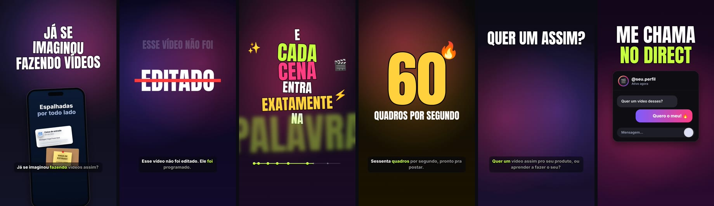
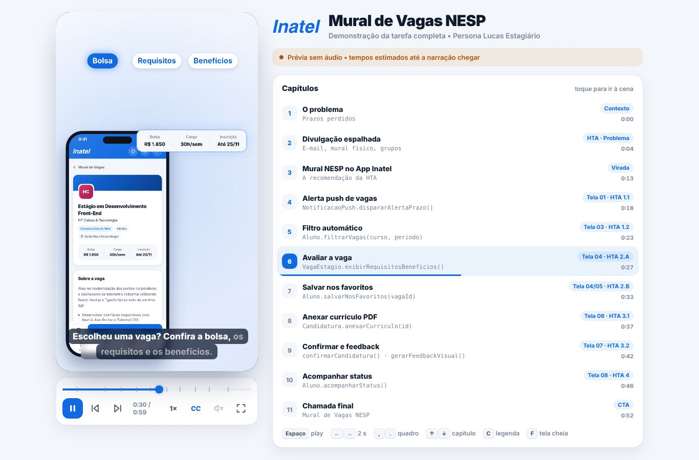
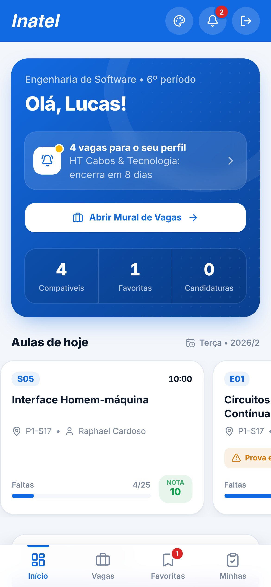
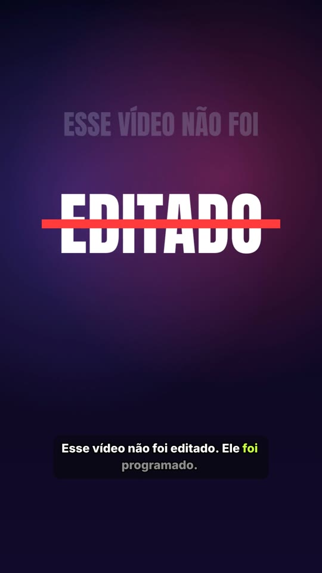
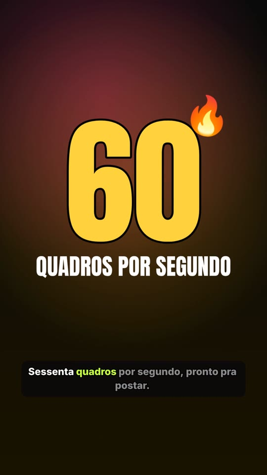
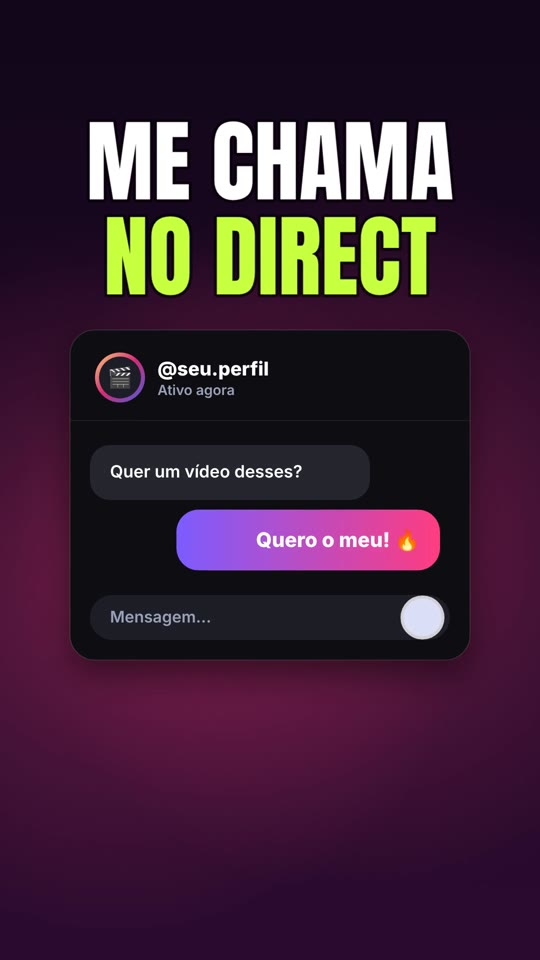
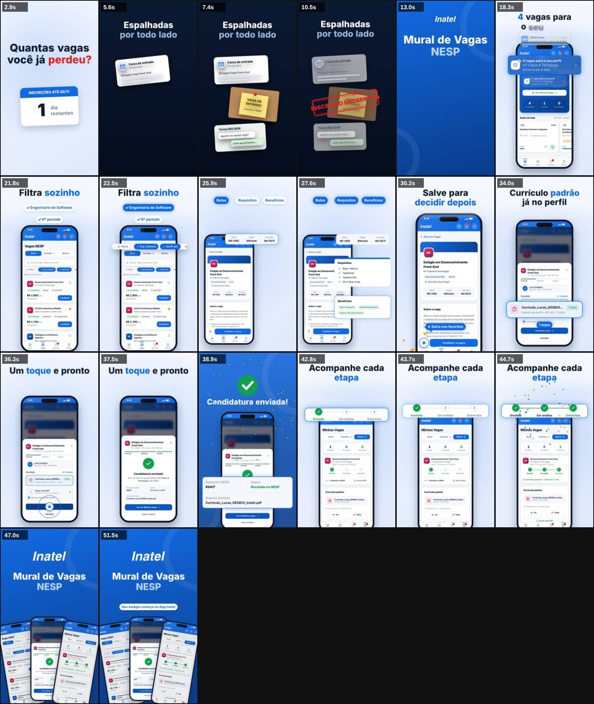

O método para criar vídeos de produto programados: prints reais, voz com IA, cada cena entrando na palavra falada, trilha própria e entrega em 60 fps — sem abrir um editor de vídeo.

Este guia ensina a transformar um produto digital em um vídeo vertical que parece feito por um estúdio de motion design — e que você consegue refazer, ajustar e variar em minutos, porque ele é código.
Números do case real deste guia: o vídeo do Mural de Vagas NESP, um app universitário.
| 1 Briefing e prints reais | 5 Construir as cenas |
| 2 Roteiro para o ouvido | 6 Trilha e efeitos |
| 3 Voz com IA | 7 Crítica em rodadas |
| 4 Narração no tempo | 8 Render e publicação |
O vídeo é uma função do tempo: desenhar(t) pinta o quadro do segundo t. As cenas não têm segundos fixos — começam quando a narração diz uma palavra. Trocou a voz? O filme inteiro se reposiciona sozinho.
Existem três jeitos de fazer vídeo de produto hoje. Só um deles junta interface real, qualidade de estúdio e custo baixo de refação.
| Editor tradicional | IA de vídeo generativa | Vídeo programado | |
|---|---|---|---|
| Mostra a tela real | Sim, com muito trabalho manual | Não — inventa telas que não existem | Sim, prints reais do app |
| Mudar uma frase | Reeditar cortes e legendas | Gerar tudo de novo | Um comando, o resto se ajusta |
| Sincronia com a fala | No olho, quadro a quadro | Aleatória | Exata, por palavra |
| Variação para teste A/B | Uma tarde por versão | Imprevisível | Cor, estilo e voz por parâmetro |
| Entrega interativa na web | Não | Não | Sim: o mesmo código vira página |
O cliente não compra "animação". Compra confiança: ver o produto de verdade funcionando, com ritmo de anúncio. Tela inventada parece mentira; tela real, com toque, transição e resultado, convence.
Como o vídeo é código, ele também vira uma página interativa: o cliente pausa, pula por capítulos e lê a legenda sincronizada. No case, cada capítulo mostra a etapa da tarefa do usuário e o método do sistema correspondente.

O player interativo do case: capítulos, linha do tempo e atalhos de teclado.
Nada de Mac obrigatório, nada de After Effects. Roda em Windows, macOS e Linux.
| Ferramenta | Papel | Custo |
|---|---|---|
| Claude Code | O diretor: escreve roteiro, cenas e scripts, roda os comandos, revisa as folhas de contato e corrige. | Plano Claude |
| Node.js + Playwright | Tira os prints do app e renderiza o filme quadro a quadro num navegador sem janela. | Grátis |
| ffmpeg | Codifica o MP4, junta áudio e vídeo, mede e ajusta o volume. | Grátis |
| ElevenLabs | A voz do locutor. Para anúncio comercial, use um plano pago (o gratuito não permite uso comercial). | A partir de US$ 5/mês |
| Python + numpy | Compõe a trilha e os efeitos sonoros em código e sincroniza a voz. | Grátis |
| GitHub Pages | Publica o vídeo interativo e o app como site, com deploy automático. | Grátis |
# um filme por pasta meu-video/ ├─ roteiro.json # falas + textos de tela (a fonte da verdade) ├─ vo.json # tempo de cada palavra (estimado → real) ├─ film.js # as cenas: desenhar(ctx, t) ├─ player.js # player interativo + modo render ├─ app/ assets/ # prints reais e imagens ├─ audio/ # narracao.mp3, mix.mp3 └─ tools/ # capturar, sincronizar, trilha, contato, render
O motor de animação (molas, easing, ruído com semente) vem do motion-reel e da Fábrica de Criativos de Filipe Molinari, ambos MIT. Este guia é o método que construí em cima deles, focado em vídeo de produto e venda.
O vídeo só convence se mostrar a interface de verdade. Por isso a primeira coisa é capturar as telas do produto com precisão — e anotar onde está cada botão.
Um script do Playwright abre o app num "celular" de 390×844 em escala 3×, faz login com a persona, percorre o fluxo e salva cada tela. Junto, grava a posição de cada elemento (card, botão, chip) para o filme recortar e animar esses pedaços depois.

Print real em 1170×2532, com a persona logada.
const ctx = await browser.newContext({ viewport: { width: 390, height: 844 }, deviceScaleFactor: 3 }); await page.screenshot({ path: 'app/mural.jpg' }); telas.mural = { card1: await rect(page.locator('article').first()) } // posição para recortar
Capturar com o servidor de desenvolvimento deixa o selo do framework na tela, e capturar logo após uma ação pega o aviso (toast) por cima. Capture a build de produção e espere os avisos sumirem antes de cada print.
O roteiro decide 80% do resultado. Escreva para quem está rolando o feed com o polegar: decide em um segundo e meio se fica.
Gancho (0–3 s) → dor → virada com boom → como funciona → prova (case real) → oferta → CTA com um verbo e um canal.
Problema → virada (nome do produto) → uma cena por etapa da tarefa do usuário → feedback visível → chamada final.
| Evite | Prefira |
|---|---|
| "Nossa solução robusta otimiza processos." | "Um toque, e pronto: candidatura enviada." |
| "4 vagas", "60fps", "R$ 25 mil" na fala | "quatro vagas", "sessenta quadros", "vinte e cinco mil reais" |
| Frases longas com várias vírgulas | 4 a 9 palavras, verbo no começo |
| Três ideias na mesma cena | Uma ideia por cena, algo novo a cada 2–4 s |
{ "falas": [
"Já se imaginou fazendo vídeos assim?",
"Sem editor. Sem After Effects. Sem arrastar clipe por clipe.",
"Esse vídeo não foi editado. Ele foi programado.",
"Me chama no direct." ] }
Texto na tela no primeiro quadro, nunca tela vazia. No Reel deste guia, "JÁ SE" já está no quadro zero e o resto da frase cai palavra por palavra junto com a voz.
Uma palavra trocada depois exige voz nova. Feche o roteiro com o cliente antes de gerar a narração.
Gere o roteiro inteiro de uma vez — a entonação flui entre as frases — em duas ou três tomadas, e escolha a que termina as frases descendo.
| Parâmetro | Demo de produto | Reel de venda |
|---|---|---|
| Modelo | Eleven v3 ou Multilingual v2 | Eleven v3 |
| Voz | Pronta da biblioteca, pt-BR, jovem e confiante | Narradora de "hook" viral, energia alta |
| Stability | 0,50 | 0,40 a 0,50 |
| Style | 0,15 a 0,25 | 0,30 a 0,45 |
| Formato | MP3 44,1 kHz, 128 kbps (192 kbps só em plano pago) | |
Nesp, não N.E.S.P.Áfter Efécts, diréct.Use pouco, só onde a tomada sem marcação ficou monótona:
[excited] Já se imaginou fazendo vídeos assim? Esse vídeo não foi editado... [confident] Ele foi programado.
Vozes da biblioteca soam melhor em português do que clones caseiros. No case, a voz "Marcio – Viral Hook Narrator" entregou 50 segundos limpos na primeira tomada.
A técnica que faz o vídeo parecer editado à mão: cada cena e cada efeito começam numa palavra falada. Para isso, você precisa saber em que segundo cada palavra acontece.
Um script estima a duração de cada palavra pelo número de letras e monta o vo.json. Assim você constrói e revisa o filme inteiro antes de gravar.
O ffmpeg detecta os trechos de fala e as pausas reais do áudio. Uma programação dinâmica encaixa as frases do roteiro nesses trechos, preferindo fronteiras nas pausas longas. Dentro da frase, as palavras são distribuídas pelos trechos respeitando a pontuação.
Com o Whisper instalado, o mesmo script usa o tempo de cada palavra reconhecida. Sem ele — ou com a rede bloqueando o modelo, como aconteceu comigo — as pausas dão conta.
# no filme, a cena começa na palavra, não num segundo fixo const tProgramado = wt(VO, 'programado.'); const tCTA = ph(VO, -1).t0; // início da última frase HITS.push([tProgramado, 'boom']); // o efeito sonoro vai junto
python3 tools/sincronizar.py narracao.mp3Com as cenas presas às palavras, trocar a voz, o ritmo ou o locutor não quebra nada. Uma variação de voz para teste A/B custa um comando.
O filme é desenhado num canvas de 1080×1920. Cada técnica abaixo é uma função pequena, reaproveitada de vídeo em vídeo.
| Técnica | O que faz | Onde usar |
|---|---|---|
| Molas | Todo movimento entra com peso, passa um pouco e assenta. Nada de movimento linear. | Sempre |
| Título com desfoque | Cada palavra entra desfocada e subindo, com 60 ms de atraso entre elas. | Demo, tom institucional |
| Slam | A palavra cai grande e assenta com mola. A linguagem nativa de Reels. | Reel de venda |
| Celular com tela real | O print dentro de um aparelho, com status bar e reflexo de vidro. | Toda prova de produto |
| Fragmentos | Recortes reais da tela (card, botão) saem do celular e flutuam à frente. | Destacar uma função |
| Dedo e toque | Um dedo anda até o botão, toca e um anel se expande. | Mostrar uso real |
| Drops e boom | Emoji que salta, tremor de câmera, flash e corte de música no impacto. | Viradas do Reel |
| Legenda queimada | A frase falada com a palavra atual em destaque, dentro da área segura. | Todo Reel |

Slam + risco: "EDITADO" um instante antes do boom.

Contador de 60 fps e drop 🔥.

CTA: tela de direct com toque.
Sem Math.random, sem timers, sem estado entre quadros: tudo calculado a partir de t. O renderizador pede quadros fora de ordem e o resultado precisa ser idêntico.
A trilha é composta em código, sem banco de música e sem direito autoral. Os efeitos caem nos mesmos instantes das cenas, porque vêm da mesma lista.
| boom | virada, 60 fps, envio da mensagem |
| whoosh | troca de cena forte |
| pop | adesivo, emoji, cartão |
| tick | cada palavra na cena "palavra" |
| teclado | roteiro sendo digitado |
| ding | "pronto pra postar" |
# a lista de efeitos sai do próprio filme node tools/hits.mjs http://localhost:8091/index.html # → hits.json python3 tools/trilha.py # → audio/mix.mp3 em −14 LUFS
Meça e ajuste em duas passadas (loudnorm do ffmpeg): −14 LUFS e pico de −1 dBTP. Uma passada só costuma ficar 1 a 2 dB abaixo.
Reserve o boom para as viradas e o CTA. Nos outros cortes, um pop leve ou nada.
Nenhum vídeo sai sem pelo menos duas rodadas de revisão em folhas de contato: um quadro por momento importante, lado a lado.

Folha de contato do case nos tempos reais da narração: cada efeito conferido contra a palavra falada.
NaN.#fff quebrando a mistura de cores (use #ffffff).Duas entregas do mesmo código: o MP4 para postar e a página interativa para o cliente, o portfólio ou a banca.
O Playwright abre o filme em modo render, chama seek(t) quadro a quadro e envia ao ffmpeg. Saída: 1080×1920, 60 fps, H.264 yuv420p, AAC 48 kHz.
node tools/render.mjs URL --fps 60
O mesmo filme com player: capítulos, linha do tempo, legenda karaokê, velocidade e tela cheia. Publicada no GitHub Pages com deploy automático a cada merge.
Settings → Pages → Source: GitHub Actions
Em Settings → Pages, escolha GitHub Actions. Não escolha "Deploy from a branch": ele publica o README em vez do site.
O deploy só é permitido a partir do branch padrão.
Num site Next.js: output: 'export', basePath: '/nome-do-repo' e trailingSlash: true.
Celulares não carregam áudio antes de um toque. O play precisa chamar audio.play() no próprio clique.
Quadros do vídeo final do case, publicado com o app no GitHub Pages.
Todos aconteceram de verdade na produção do case. Cada um custou de minutos a horas.
A fonte estava em "Deploy from a branch", apontando para o branch errado. Correção: Source em GitHub Actions e rodar o workflow de novo.
O build passou, mas o deploy falhou com 404. Correção: ative o Pages antes do primeiro merge do workflow.
O player esperava o áudio "carregar" para ligar o som, e o celular nunca carrega antes do toque. Correção: tocar o áudio no próprio clique.
O fim do áudio pausava o filme, que era 2 s mais longo. Correção: o relógio interno continua quando o áudio acaba.
Servidor de teste sem HTTP Range não deixa o navegador pular no áudio. Correção: testar com servidor que aceita Range e não deixar o vídeo seguir um áudio desalinhado.
Desfoque aplicado no quadro inteiro de 1080×1920 a cada palavra. Correção: desfocar a palavra num canvas pequeno e guardar em cache.
A captura pegou o toast de confirmação. Correção: esperar o aviso sumir e capturar a build de produção.
Um __pycache__ entrou no commit. Correção: .gitignore desde o primeiro dia.
Trocar uma palavra depois exige voz nova e novo render. Correção: aprovar o texto antes de gerar a voz.
Legenda e adesivos na faixa de baixo ficam escondidos pela legenda do post. Correção: respeitar a área segura.
Cole no Claude Code, na pasta do projeto, um de cada vez. Troque o que está entre colchetes.
Rode a build de produção do app e escreva tools/capturar.mjs com Playwright (390×844, escala 3). Faça login como [persona], percorra [fluxo] e salve um JPG por tela em app/, mais app/telas.json com a posição de [elementos]. Espere os toasts sumirem antes de cada print.
Escreva roteiro.json para um [Reel de venda de 30 s | demo de 50 s] de [produto] para [público]. Estrutura: gancho, dor, virada, como funciona, prova, CTA para [canal]. Frases de 4 a 9 palavras, números por extenso, uma ideia por cena.
Crie film.js e player.js: canvas 1080×1920, desenhar(ctx, t) puro, cenas presas às palavras do vo.json com wt(). Use molas, [slam e drops de emoji | títulos com desfoque], celular com os prints reais e legenda queimada na área segura. Exporte HITS com os efeitos de cada cena.
Gere uma folha de contato com um quadro por cena. Dê nota de 1 a 10 para gancho, leitura no celular, movimento, variedade e área segura. Corrija os três piores pontos e repita até tudo passar de 8.
Aqui está a narração: [arquivo.mp3]. Rode tools/sincronizar.py, confira se cada frase caiu numa pausa real, gere a trilha com ducking e renderize o MP4 final em 60 fps a −14 LUFS.
Publique o projeto no GitHub Pages com um workflow de Actions (export estático, basePath do repositório, a página interativa em /demo). Teste o fluxo inteiro sob o caminho do repositório e o áudio no celular antes do merge.
Vídeo do seu produto com prints reais, voz, trilha e página interativa. Você aprova o roteiro, eu entrego pronto pra postar.
Acompanhamento para montar o seu primeiro vídeo com este método, do briefing à publicação.
Me chama no direct ou comenta "VÍDEO" no Reel.